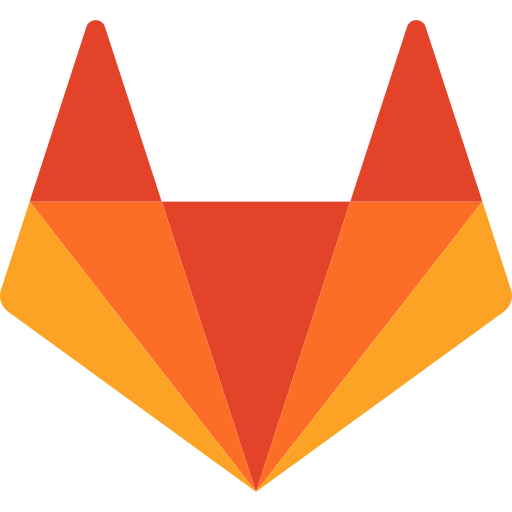
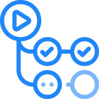
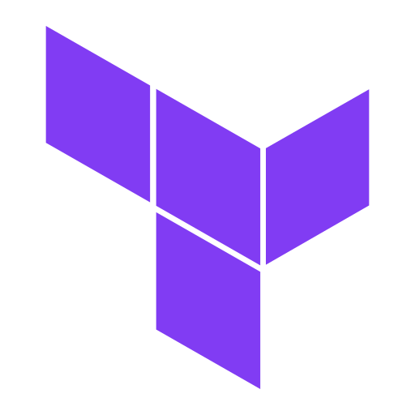
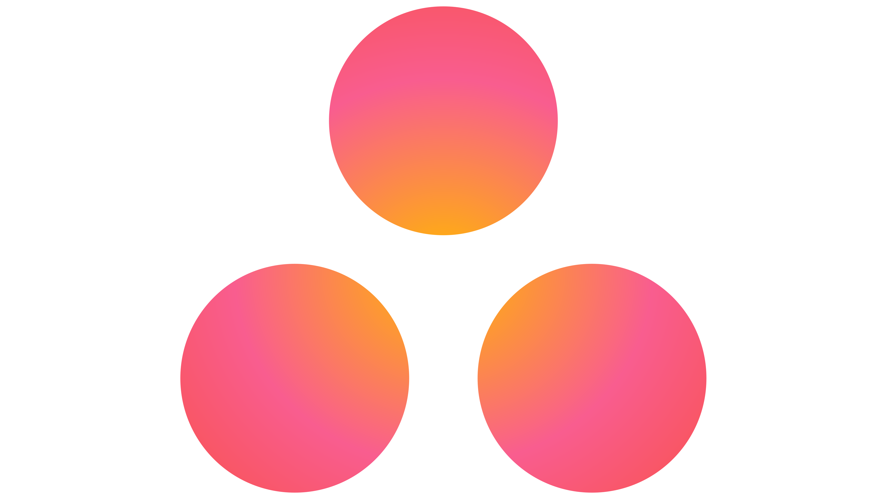
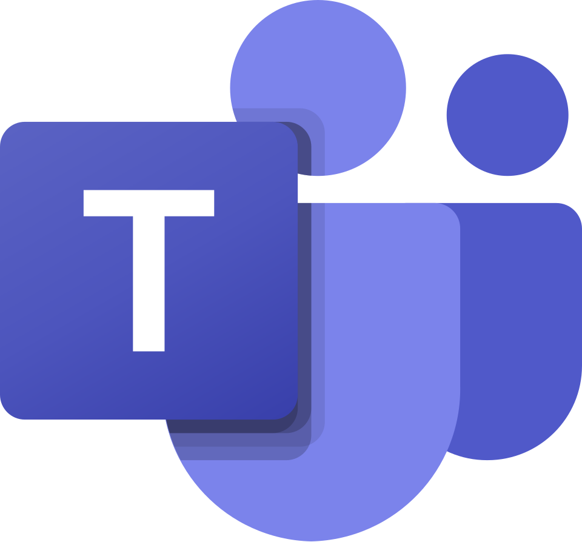
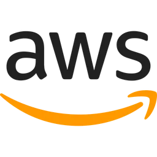

DevOps
A Ponte entre Criar e Rodar
Por que todo programador precisa entender DevOps?
Cultura + Desenvolvimento + Operações
Mayko Souza
Analista Devops do Grupo Aposta Ganha
Professor de música 🎼
Hobby: Piano e teclado 🎹
O Que é?
Então surge o DevOps
Os 5 Princípios
Colaboração
Automação
CI/CD
Monitoramento
Segurança
Ferramentas
Versionamento
 GitHub
GitHub

GitLabContêineres e Orquestração
 Docker
Docker
 podman
podman
CI/CD

GitHub Actions

Infraestrutura como código
(IAC)

Terraform Ansible
Ansible
Infraestrutura como Código
Exemplo: Criando uma instância na GCP com Terraform
resource "google_compute_instance" "vm_devops" {
name = "devops-machine"
machine_type = "f1-micro"
zone = "us-central1-a"
boot_disk {
initialize_params {
image = "debian-cloud/debian-11"
}
}
network_interface {
network = "default"
access_config {
// Inclui IP público
}
}
}
Monitoramento
Colaboração
 ClickUp
ClickUp
Github Projects

Asana Slack
Slack

TeamsComputação em Nuvem
A computação em nuvem é a entrega de recursos de TI sob demanda por meio da Internet com preço conforme o uso. Em vez de comprar, ter e manter data centers e servidores físicos, você pode acessar serviços de tecnologia, como capacidade computacional, armazenamento e bancos de dados, conforme a necessidade, usando um provedor de nuvem
Principais benefícios da computação em nuvem
A computação em nuvem facilita e reduz os custos de backup de dados, e continuidade dos negócios, já que os dados podem ser espelhados em diversos sites redundantes na rede do provedor de serviços de nuvem.
Você não precisa provisionar recursos em excesso para absorver picos de atividades no futuro
Isso acontece porque a computação em nuvem elimina o gasto de capital com a compra de hardware e o custo é calculado com base no uso e provisionamento
É posssível implantar seus serviços em minutos, em diferentes regiões do mundo aproveitando a infraestrutra global dos provedores.
Muitos provedores de nuvem oferecem um amplo conjunto de políticas, tecnologias e controles que fortalecem sua postura geral de segurança, ajudando a proteger dados, aplicativos e infraestrutura contra possíveis ameaças
Provedores de Nuvem

Especializações
FinOps é a prática de gestão financeira da nuvem, conectando decisões técnicas ao custo
rightsizing, autoscaling, desligamento de recursos ociosos tagging/labels, centros de custo, dashboards, monitoramento storage lifecycle, cache, escolha de serviços, egress
DataOps leva princípios de automação, versionamento e confiabilidade para pipelines de dados (ETL/ELT) e analytics:
Automatiza processos de integração, testes e implantação de dados, reduzindo o tempo de entrega de informações Foca em monitoramento contínuo para reduzir erros nos dados e garantir sua integridade
DataOps leva princípios de automação, versionamento e confiabilidade para pipelines de dados (ETL/ELT) e analytics:
Segurança não é apenas da equipe de segurança, mas sim de desenvolvedores, operações e especialistas Ferramentas de análise de segurança (SAST/DAST) são inseridas na esteira de CI/CD Monitoramento constante para detectar e corrigir falhas
"Muitas vezes, o que impede a entrega rápida não é a tecnologia, mas as barreiras que criamos entre as equipes."
- Nicole ForsgrenDevOps
Não é ferramenta.
Não é cargo.
É cultura.